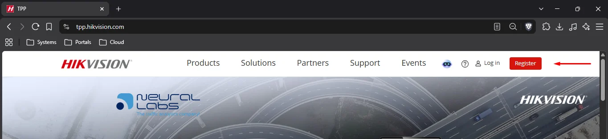
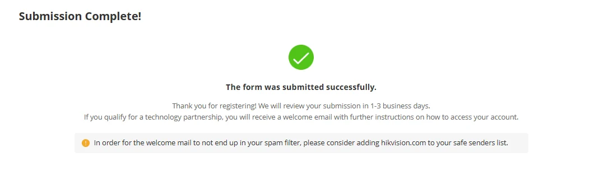
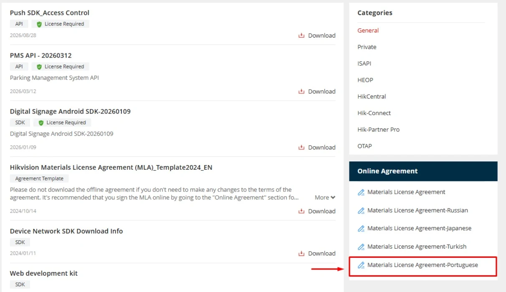
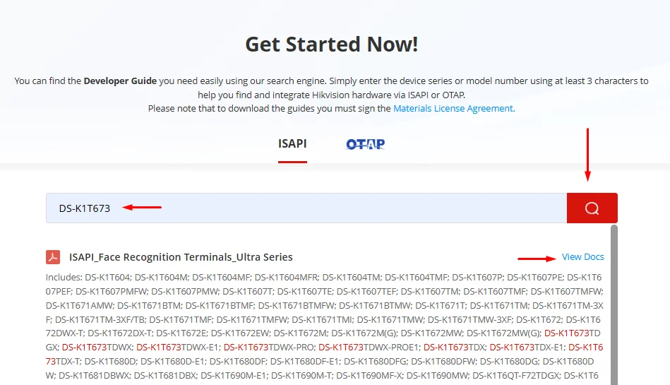
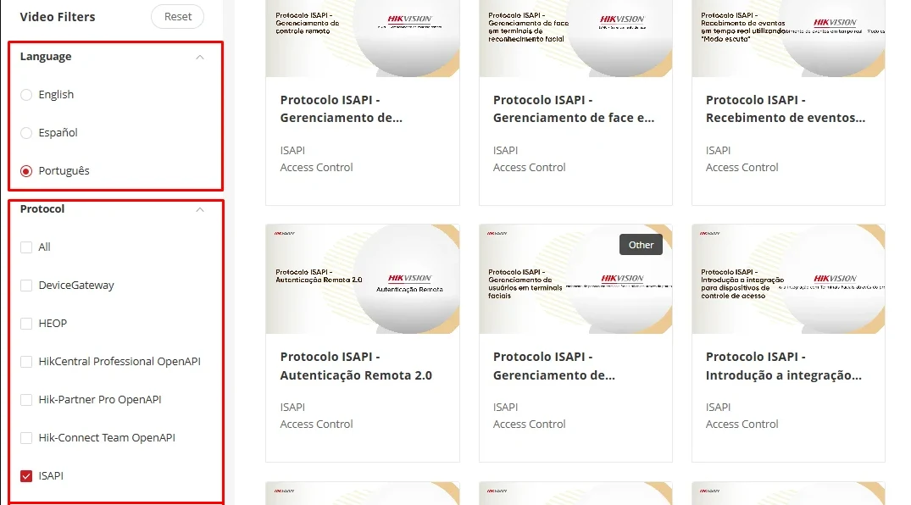
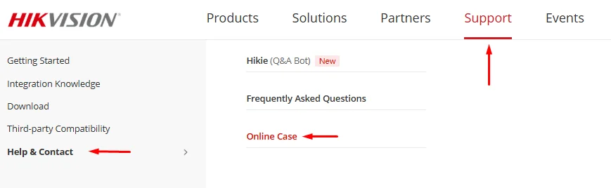
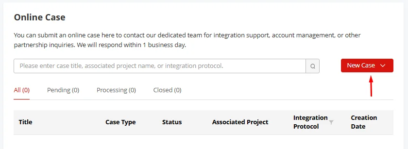

PORTAL DE PARCEIROS DE TECNOLOGIA
Encontre o caminho para sua integração.
Um guia prático para criar sua conta no TPP, liberar a documentação técnica, encontrar treinamentos e solicitar apoio à Hikvision.
Tenha em mãos os dados da empresa, como CNPJ, e-mail corporativo e endereço, além das demais informações solicitadas no cadastro. Para baixar guias ISAPI, documentos e softwares, é necessário ter a conta aprovada e assinar o contrato MLA.
Criar uma conta no TPP
O cadastro identifica sua empresa como parceira de tecnologia e libera o acesso aos recursos disponíveis para sua conta após a aprovação.
- Entre no portal. Acesse tpp.hikvision.com e selecione Register.
- Cadastre seu usuário. Preencha o registro OneHikID e aceite a política de privacidade para continuar.
- Informe os dados da empresa. Complete os campos de contato e envie o formulário em Submit.
- Aguarde a aprovação. O acesso estará disponível após o recebimento do e-mail de aprovação da conta. Siga as instruções da mensagem para entrar no portal.


Assinar o contrato MLA
O Materials License Agreement é o contrato usado para obter acesso à documentação técnica restrita, incluindo os guias ISAPI. Você só poderá acessar a conta e iniciar esta etapa após receber o e-mail de aprovação do cadastro.
- Acesse a página de assinatura. Após receber o e-mail de aprovação e entrar na conta, abra Assinar MLA ou clique em My Account → Sign License Agreements Online.
- Escolha o contrato em português. Clique em Materials License Agreement-Portuguese.
- Preencha os dados da empresa e clique em Sign the Agreement.
- Assine no DocuSign. Conclua a assinatura e acompanhe por e-mail a confirmação após a assinatura da Hikvision.

Baixar o guia ISAPI
Pesquise pelo modelo do dispositivo para localizar o guia do desenvolvedor adequado à integração direta.
- Abra a página de documentação. Acesse Download ISAPI/OTAP ou clique em Support → Download → ISAPI Developer Guides.
- Pesquise o equipamento. Digite o modelo do dispositivo no campo de busca e clique no botão de pesquisa.
- Confira os modelos abrangidos pelo resultado e clique em View Docs no guia correspondente.

Encontrar treinamentos
Os vídeos podem ser filtrados por idioma e pelo tipo de protocolo da integração.
- Abra a página de treinamento. Acesse Vídeos tutoriais ou clique em Support → Integration Knowledge → Getting Started Integration Knowledge.
- Escolha o idioma e a categoria. Use os filtros Language e Protocol para encontrar os vídeos do tema desejado.
- Abra o treinamento relevante para seu cenário. A disponibilidade dos vídeos pode variar.

Mais materiais: canal oficial Hikvision do Brasil ↗. Os vídeos do TPP podem não ter legendas; as etapas essenciais deste manual estão disponíveis em texto.
Abrir um chamado de integração
Registre a dúvida técnica no portal para que a equipe de suporte receba o contexto do equipamento e do problema.
- Acesse os chamados. Abra Abrir chamado ou clique em Support → Help & Contact → Online Case.
- Clique em New Case e descreva a integração e o comportamento observado.
- Inclua dados para diagnóstico: modelo completo, versão e build do firmware, mensagens de erro, passos para reproduzir e, se houver problema de comunicação, captura de rede pertinente.
- Envie em Submit e acompanhe as orientações pelo e-mail cadastrado, respondendo na mesma conversa quando necessário.


Coleções Postman
Importe a coleção e o ambiente no Postman para explorar as requisições de integração.
Terminais de acesso MinMoe · PT-BR
Coleção de requisições e ambiente Postman para a linha MinMoe. Após importar os dois arquivos, configure no ambiente o endereço, o usuário e a senha do seu dispositivo.